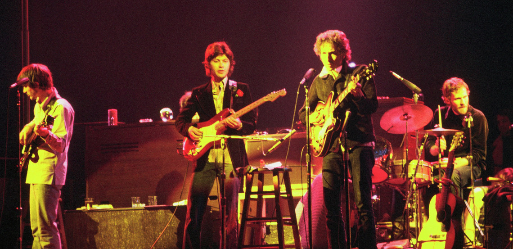

Bob Dylan, Premio Nobel de Literatura
La concesión del premio Nobel de literatura de este año a Robert A. Zimmerman, Bob Dylan (Duluth, EE. UU., 1941) está generando una cierta polémica —como era previsible, por otra parte. Nadie discute que Dylan es excepcional en su arte, pero se generan dudas acerca de que su arte pueda ser calificado de literatura.
Salvador Climent
Desde el punto de vista del rock y la música popular, que es el de este artículo, Bob Dylan cambió para siempre la naturaleza de la letra de las canciones. Hasta Bob Dylan eran artefactos de consumo, básicamente variaciones sobre las emociones del amor adolescente y otros temas susceptibles de impacto comercial, compuestas por escritores profesionales a sueldo de las productoras. Bob Dylan cambia las reglas del juego.
El mito de la canción protesta
Hay un gran malentendido popular sobre Bob Dylan. Es víctima del cliché de la canción protesta, como John Lennon lo es del cliché de paz, amor y flores que supuestamente representa Imagine. Pero Dylan no ha sido nunca un agitador: cuenta historias o expone estados de conciencia.
Sin lugar a dudas, en su segundo y tercer elepés la preocupación social es la clave de algunas canciones que siguen la veta politizada de su maestro Woody Guthrie; son las más conocidas y las que le confieren repercusión mundial (Blowin’ In The Wind, With God on Our Side, A Hard Rain’s A-Gonna Fall, Masters of War, The Times They Are a-Changin’) pero ni siquiera son mayoría en estos dos álbumes, donde, por cierto, ya encontramos las primeras grandes muestras de la sensibilidad que sí que definirá su obra (Don’t Think Twice It’s Allright, Girl from the North Country). De hecho, Dylan renegó explícitamente ser un abanderado de la canción protesta en la estrepitosa electrificación que se produce a partir de los álbumes Bringing It All Back Home (Columbia, 1965) y Highway 61 Revisited (Columbia, 1965), que le valió el anatema de los seguidores con conciencia social, quienes daban por hecho que habían encontrado un nuevo profeta.
En el resto de sus cincuenta años de carrera la conciencia social tan solo la encontramos en algunas crónicas de personajes reales (Hurricane, Ballad of Hollis Brown, The Lonesome Death of Hatie Carroll, Blind Willie McTell, George Jackson), en las que sobre todo narra la vida de negros tratados con injusticia. Sí, más allá de sus dos o tres primeros años de carrera, Bob Dylan demuestra tener conciencia política, especialmente preocupación por la discriminación racial. Sin embargo, no protesta —en este tipo de canciones hace crónicas, en algunos casos sorprendentemente asépticas y distantes. El resultado es que, con estas excepciones, la práctica totalidad del cancionero de Dylan no tiene intención política ni social.
La revolución de Dylan
La gran innovación del estadounidense es que introduce en las letras del rock la expresión de la introspección y la subjetividad, y la utilización de todo el aparato propio de la poesía (metáforas, imágenes, colocaciones paradójicas) para crear paisajes emocionales o ficciones abstractas que toman sentidos variables en las mentes de los oyentes.
A partir de Bob Dylan el mundo asume que las letras de las canciones populares (1) pueden expresar (o presentarse como que expresan) emociones adultas y los puntos de vista del cantante, que crucialmente es el autor de la letra; y (2) pueden tener intención artística, poética. En la música popular global esto es un cambio radical, un cambio de época.
El altavoz de la revolución
El efecto se nota muy claramente en el gran fenómeno global de la música popular, los Beatles. Los Beatles cambian el pop y el rock para siempre, pero Bob Dylan cambia la manera de escribir de los Beatles. Las letras de las canciones de los de Liverpool son radicalmente diferentes a partir de 1964. Hasta entonces los Beatles habían seguido —con un éxito espectacular, por cierto— el patrón de las letras de amor y vivencias adolescentes de los escritores de canciones comerciales. El cambio comienza tímidamente en I’m a Loser, del álbum Beatles for Sale (Parlophone, 1964), toma forma en, Help (Parlophone 1965) y se establece definitivamente en Rubber Soul (Parlophone 1965) y Revolver (Parlophone 1966).
Este cambio se produce inicialmente en la manera de escribir de John Lennon, que él mismo reconoce causado por la fascinación que le produce la lírica del segundo álbum de Dylan The Freewheelin’ (Columbia, 1963). A partir de este momento, temas de John, Paul o George como Nowhere Man, Taxman, Eleanor Rigby, I’m Only Sleeping, She Said She Said o Doctor Robert abren la puerta a una nueva vía de expresión en el resto de los autores de canciones de todo el mundo: dan paso a una lírica adulta en la canción popular.
Esto ahora es lo rutinario y normal, pero en 1964 no lo era. Y detrás de los Beatles vinieron todos los demás. La gran influencia de los Beatles amplifica y globaliza la revolución de Dylan en la escritura de canciones. Está claro que ni la expresión de la subjetividad ni la canción con intención poética son un invento de Bob Dylan; en la música popular occidental contemporánea ya existe el blues, del que Dylan es continuador, o la chanson francófona (Brassens, Brel), sin ir más lejos. No obstante, aquí no estamos hablando de fenómenos sectoriales o localizados, sino del impacto global del pop y el rock.
Poesía y/o canción
[…] Our songs are alive in the land of the living.
But songs are unlike literature. They’re meant to be
sung, not read. The words in Shakespeare’s plays were
meant to be acted on the stage. Just as lyrics in
songs are meant to be sung, not read on a page. And I
hope some of you get the chance to listen to these
lyrics the way they were intended to be heard: in
concert or on record or however people are listening
to songs these days. I return once again to Homer,
who says,
Sing in me, oh Muse, and through me tell the
story
.
Pero volvamos al origen de la polémica. Lo que hace Dylan, ¿es literatura? Es decir, ¿es poesía? No lo sé. Tiendo a pensar que textos como los que nos ocupan, bien son un poema, bien son una canción, pero son cosas diferentes, en suma. La diferencia puede radicar en que un poema se aguanta solo, sin música, y el texto de una canción no. Las letras de Dylan, ¿son poesía simplemente leídas? Lo podéis juzgar vosotros mismos en estos magníficos fragmentos de canciones de Dylan elegidos por Lluís Gavaldà y publicados en la revista Catorze. A mí estos versos me transmiten y causan emociones, algo que, como simple lector, diría que es la función de la poesía. Pero no sé si lo hacen porque antes los he oído muchas veces cantados y, por tanto, cuando los leo la canción me resuena en la cabeza.
En cambio, para introducir una comparación relevante, la mayoría de las letras de Leonard Cohen funcionan perfectamente sobre el papel, sin ser cantadas. Tampoco es de extrañar, porque de hecho muchas provienen de sus libros de poesía y han sido musicadas posteriormente. Tal vez, Cohen es un poeta (que pone música a sus versos) y Dylan es un autor de canciones (con calidad poética). Es una diferencia notable que, sin duda, descansa en la identificación de la poesía con el texto escrito.
Pero debemos tener en cuenta que el origen de la poesía, desde la antigüedad clásica y los trovadores, es la oralidad; más concretamente la recitación musicada ante un público. Y eso es lo que hace Dylan, ni más ni menos. Quizá podemos pensar entonces que el arte de Bob Dylan no hace más que devolver la poesía en casa, a sus orígenes naturales.
Así pues, ¿lo que hace Bob Dylan es poesía? Supongo que depende de cómo se defina la poesía. Tampoco es necesario que le preguntéis a él, puesto que no os lo dirá: Dylan nunca se explica, ni mucho menos hace interpretaciones del sentido de sus canciones… Dylan solo sube al escenario y canta. Planteémoslo de otro modo: Bob Dylan, ¿es un poeta? Dado que como cantante es justito y como músico simplemente correcto, si su impacto emocional en el receptor es tan intenso como todo el mundo reconoce, casi estamos obligados a decir que sí.
Por último, ¿hay poetas mejores y que, en consecuencia, se merecen mucho más el premio Nobel de literatura? Probablemente. Pero es difícil que, de pasada, hayan cambiado la naturaleza y la historia de un ámbito artístico completo, como ha hecho él con la canción popular.
Climent, S. (17-10-2016). Bob Dylan, Premio Nobel de Literatura.